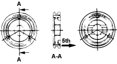

- Install the bearing ring.
- Install the bearing retainer.
NOTE:
Apply LOCTITE 242 to the 7 Torx screws. Use a No.45 Torx bit to tighten the screws.
Torque:
26 Nm (2.6 kgf/m, 19 lbf/ft)
- Install the reverse idler shaft bolt (A).
Torque:
38 Nm (3.8 kgf/m, 28 lbf/ft)

- Install the 5th gear needle bearing collar (A) and 5th gear thrust washer (B) together using the special tool with a hammer.
NOTE: Before installing, apply oil to the thrust surfaces and collar.

- Install the 5th gear needle bearing.
- Install the output 5th gear.
- Install the input 5th gear.
NOTE:
- The insert spring set positions should differ for both sides.
- The ends of the insert springs should not interfere with the hub.
- Before installing, apply oil to the output gear thrust surfaces.

- Install the 5th gear needle bearing collar, 5th block ring and 5th synchroniser assembly with shift fork in its groove and back plate to the output shaft.
- Align the shift rod (A) and the shift arm (B). Install a new double spring pin (C).

- Install the 1st/2nd detent plug, 3rd/4th detent plug, 5th detent plug, detent springs and detent balls.
Torque:
25 Nm (2.5 kgf/m, 18 lbf/ft)
- Install the insert stopper plate.